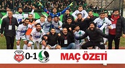

Kastamonu Spor Kulübü

Kastamonu'dan bir Türk futbol kulübüydü. Kulüp 1967 – 1968 sezonunda
ikinci seviyede başladı. Kastamonuspor, 1976 – 1977 sezonunun ardından
amatör lige düştü. 1984 – 1985 sezonu için profesyonel futbola geri
döndüler. O zamandan beri Türk futbolunun üçüncü kademesinde yarıştılar.
Takım, 2007 – 2008 sezonundan sonra playofflara yükseldi. ancak Darıca
Gençlerbirliği'ne yenildi ve TFF İkinci Lig'e çıkamadı. Kastamonuspor,
2008 – 2009 sezonunda TFF Üçüncü Lig'in 4. grubunda mücadele etti.
Yükselme aşamasına ulaşamamalarına rağmen klasman grubunun
zirvesindeydiler ve başka bir playoff şansı mümkün görünüyordu. 2009
Sezonu için TFF İkinci Ligi'ne yükselmeleri için playoff yeri
garantilendi. KastamonuSpor maçları Kastamonu Gazi Stadyumu'nda
oynanmaktadır.